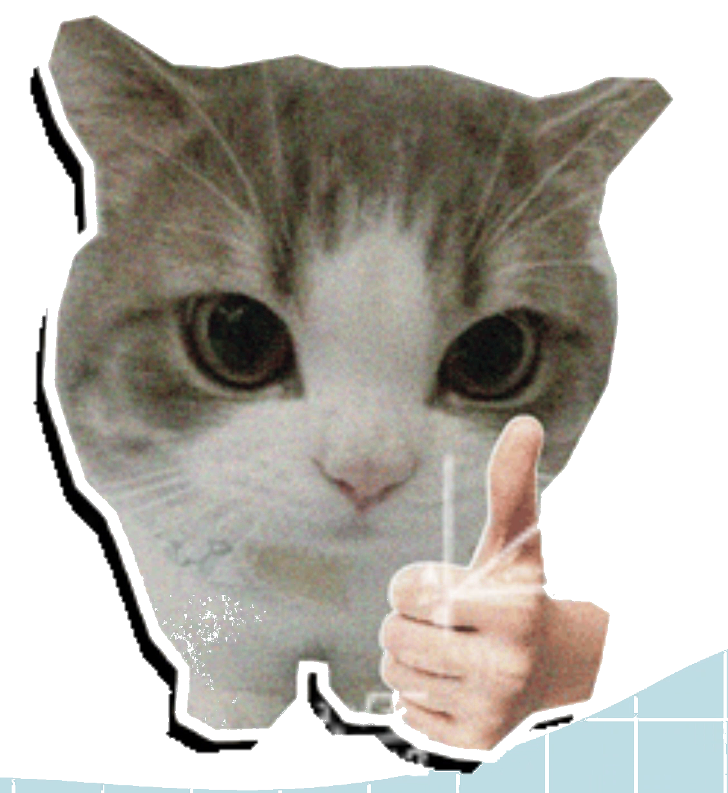
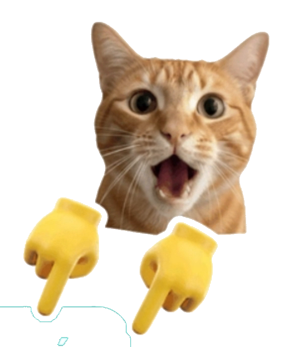
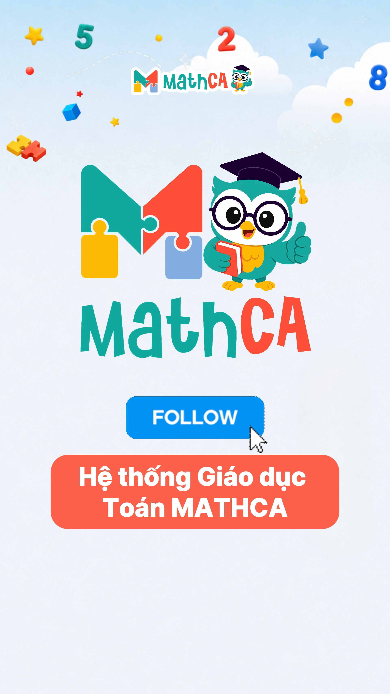

1 + 2 + 4 + 8 + ... + 1024
=
1 +
1 + 2 + 4 + 8 + ... + 1024
- 1
=
2 + 2
+ 4 + 8 + ... + 1024
- 1
=
4 + 4
+ 8 + ... + 1024
- 1
=
16 + ... + 1024
- 1
=

QUY LUẬT
Số sau gấp đôi số trước

2048
- 1
= 2047
